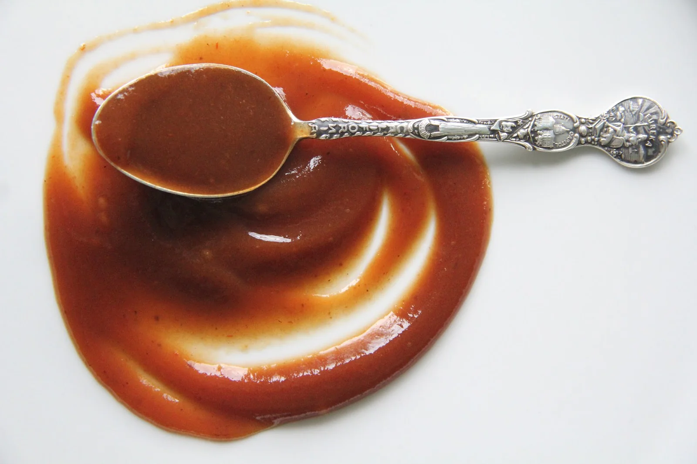

Demi-Glace

Description
A classic french Demi-Glace.
A total umami bomb. Used as a ingredient for many tasty sauces.
Ingredients
- 1 Bay Leaf
- 3 to 4 Sprigs Fresh Thyme
- 3 to 4 Fresh Parsley Stems
- 7 to 8 Whole Black Peppercorns
- 2 Cups Espagnole Sauce
- 2 Cups Brown Stock (Veal or 50/50 Beef, Chicken)
- Pink Himalayan Salt, To Taste
- Freshly Ground Black Pepper, To Taste
Instructions
- Tie the bay leaf, thyme, parsley stems, and peppercorns in cheesecloth with kitchen twine.
- Combine the espagnole sauce and stock in a heavy-bottomed saucepan. Bring to a boil over medium-high heat, then lower to a simmer.
- Add the cheesecloth spice bundle. You can tie the bundle to the pot handle to make it easier to retrieve. Reduce until the volume has reduced by half, about 45 minutes.
- Remove the pan from heat and remove the sachet from sauce.
- Pour the demi-glace through a mesh strainer lined with a piece of cheesecloth.
- Season to taste with salt and pepper. Freeze to store long-term.